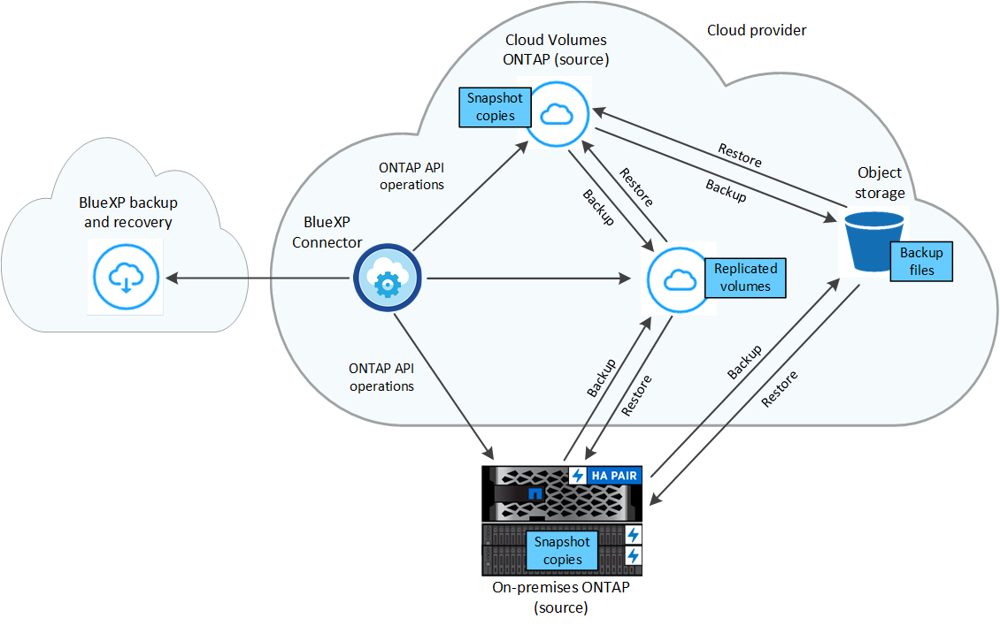

Release notes
Release notes
Protect your ONTAP volume data using BlueXP backup and recovery
 Suggest changes
Suggest changes
The BlueXP backup and recovery service provides backup and restore capabilities for protection and long-term archive of your ONTAP volume data. You can implement a 3-2-1 strategy where you have 3 copies of your source data on 2 different storage systems along with 1 copy in the cloud.
After activation, backup and recovery creates block-level, incremental forever backups that are stored on another ONTAP cluster and in object storage in the cloud. In addition to your source volume, you'll have a:
-
Snapshot copy of the volume on the source system
-
Replicated volume on a different storage system
-
Backup of the volume in object storage

BlueXP backup and recovery leverages NetApp's SnapMirror data replication technology to ensure that all the backups are fully synchronized by creating Snapshot copies and transferring them to the backup locations.
The benefits of the 3-2-1 approach include:
-
Multiple data copies provide multi-layer protection against both internal (insider) and external cybersecurity threats.
-
Multiple media types ensure failover viability in the case of physical or logical failure of one media type.
-
The onsite copy facilitates quick restores, with the offsite copies at the ready just in case the onsite copy is compromised.
When necessary, you can restore an entire volume, a folder, or one or more files, from any of the backup copies to the same or different working environment.
Features
Replication features:
-
Replicate data between ONTAP storage systems to support backup and disaster recovery.
-
Ensure the reliability of your DR environment with high availability.
-
Native ONTAP in-flight encryption set up via Pre-Shared Key (PSK) between the two systems.
-
Copied data is immutable until you make it writable and ready to use.
-
Replication is self-healing in the event of a transfer failure.
-
When compared to the BlueXP replication service, the replication in BlueXP backup and recovery includes the following features:
-
Replicate multiple FlexVol volumes at a time to a secondary system.
-
Restore a replicated volume to the source system or to a different system using the UI.
-
Manage replication policies
-
See Replication limitations for a list of replication features that are unavailable with BlueXP backup and recovery.
Backup to object features:
-
Back up independent copies of your data volumes to low-cost object storage.
-
Apply a single backup policy to all volumes in a cluster, or assign different backup policies to volumes that have unique recovery point objectives.
-
Create a backup policy to be applied to all future volumes created in the cluster.
-
Make immutable backup files so they are locked and protected for the retention period.
-
Scan backup files for possible ransomware attack - and remove/replace infected backups automatically.
-
Tier older backup files to archival storage to save costs.
-
Delete the backup relationship so you can archive unneeded source volumes while retaining volume backups.
-
Back up from cloud to cloud, and from on-premises systems to public or private cloud.
-
Backup data is secured with AES-256 bit encryption at-rest and TLS 1.2 HTTPS connections in-flight.
-
Use your own customer-managed keys for data encryption instead of using the default encryption keys from your cloud provider.
-
Support for up to 4,000 backups of a single volume.
Restore features:
-
Restore data from a specific point in time from local Snapshot copies, replicated volumes, or backed up volumes in object storage.
-
Restore a volume, a folder, or individual files, to the source system or to a different system.
-
Restore data to a working environment using a different subscription/account or that is in a different region.
-
Ability to perform a quick restore of a volume from cloud storage to a Cloud Volumes ONTAP system or to an on-premises system; perfect for disaster recovery situations where you need to provide access to a volume as soon as possible.
-
Data is restored on a block level, placing the data directly in the location you specify, all while preserving the original ACLs.
-
Browsable and searchable file catalogs for easy selection of individual folders and files for single file restore.
Supported working environments for backup and restore operations
BlueXP backup and recovery supports ONTAP working environments and public and private cloud providers.
Supported backup destinations
BlueXP backup and recovery enables you to back up ONTAP volumes from the following source working environments to the following secondary working environments and object storage in public and private cloud providers. Snapshot copies reside on the source working environment.
| Source Working Environment | Secondary Working Environment (Replication) | Destination Object Store (Backup) |
|---|---|---|
Cloud Volumes ONTAP in AWS |
Cloud Volumes ONTAP in AWS |
Amazon S3 |
On-premises ONTAP system |
Cloud Volumes ONTAP |
Amazon S3 |
Supported restore destinations
You can restore ONTAP data from a backup file that resides in a secondary working environment (a replicated volume) or in object storage (a backup file) to the following working environments. Snapshot copies reside on the source working environment and can be restored only to that same system.
| Backup File Location | Destination Working Environment | |
|---|---|---|
Object Store (Backup) |
Secondary System (Replication) |
|
Amazon S3 |
Cloud Volumes ONTAP in AWS |
Cloud Volumes ONTAP in AWS |
NetApp StorageGRID |
On-premises ONTAP system |
On-premises ONTAP system |
ONTAP S3 |
On-premises ONTAP system |
On-premises ONTAP system |
Note that references to "on-premises ONTAP systems" includes FAS, AFF, and ONTAP Select systems.
Supported volumes
BlueXP backup and recovery supports the following types of volumes:
-
FlexVol read-write volumes
-
FlexGroup volumes (requires ONTAP 9.12.1 or later)
-
SnapLock Enterprise volumes (requires ONTAP 9.11.1 or later)
-
SnapLock Compliance volumes (requires ONTAP 9.14 or later)
-
SnapMirror data protection (DP) destination volumes
See the sections on Backup and Restore limitations for additional requirements and limitations.
Cost
There are two types of costs associated with using BlueXP backup and recovery with ONTAP systems: resource charges and service charges. Both of these charges are for the backup to object portion of the service.
There is no charge to create Snapshot copies or replicated volumes - other than the disk space required to store the Snapshot copies and replicated volumes.
Resource charges
Resource charges are paid to the cloud provider for object storage capacity and for writing and reading backup files to the cloud.
-
For Backup to object storage, you pay your cloud provider for object storage costs.
Since BlueXP backup and recovery preserves the storage efficiencies of the source volume, you pay the cloud provider object storage costs for the data after ONTAP efficiencies (for the smaller amount of data after deduplication and compression have been applied).
-
For restoring data using Search & Restore, certain resources are provisioned by your cloud provider, and there is per-TiB cost associated with the amount of data that is scanned by your search requests. (These resources are not needed for Browse & Restore.)
-
In AWS, Amazon Athena and AWS Glue resources are deployed in a new S3 bucket.
-
-
If you plan to restore volume data from a backup file that has been moved to archival object storage, then there's an additional per-GiB retrieval fee and per-request fee from the cloud provider.
-
If you plan to scan a backup file for ransomware during the process of restoring volume data (if you have enabled DataLock and Ransomware Protection for your cloud backups), then you'll incur extra egress costs from your cloud provider as well.
Service charges
Service charges are paid to NetApp and cover both the cost to create backups to object storage and to restore volumes, or files, from those backups. You pay only for the data that you protect in object storage, calculated by the source logical used capacity (before ONTAP efficiencies) of ONTAP volumes which are backed up to object storage. This capacity is also known as Front-End Terabytes (FETB).
There are three ways to pay for the Backup service. The first option is to subscribe from your cloud provider, which enables you to pay per month. The second option is to get an annual contract. The third option is to purchase licenses directly from NetApp. Read the Licensing section for details.
Licensing
BlueXP backup and recovery is available with the following consumption models:
-
BYOL: A license purchased from NetApp that can be used with any cloud provider.
-
PAYGO: An hourly subscription from your cloud provider's marketplace.
-
Annual: An annual contract from your cloud provider's marketplace.
A Backup license is required only for backup and restore from object storage. Creating Snapshot copies and replicated volumes do not require a license.
Bring your own license
BYOL is term-based (1, 2, or 3 years) and capacity-based in 1 TiB increments. You pay NetApp to use the service for a period of time, say 1 year, and for a maximum amount capacity, say 10 TiB.
You'll receive a serial number that you enter in the BlueXP digital wallet page to enable the service. When either limit is reached, you'll need to renew the license. The Backup BYOL license applies to all source systems associated with your BlueXP account.
Pay-as-you-go subscription
BlueXP backup and recovery offers consumption-based licensing in a pay-as-you-go model. After subscribing through your cloud provider's marketplace, you pay per GiB for data that's backed up — there's no up-front payment. You are billed by your cloud provider through your monthly bill.
Note that a 30-day free trial is available when you initially sign up with a PAYGO subscription.
Annual contract
When using AWS, two annual contracts are available for 1, 2, or 3 year terms:
-
A "Cloud Backup" plan that enables you to back up Cloud Volumes ONTAP data and on-premises ONTAP data.
-
A "CVO Professional" plan that enables you to bundle Cloud Volumes ONTAP and BlueXP backup and recovery. This includes unlimited backups for Cloud Volumes ONTAP volumes charged against this license (backup capacity is not counted against the license).
How BlueXP backup and recovery works
When you enable BlueXP backup and recovery on a Cloud Volumes ONTAP or on-premises ONTAP system, the service performs a full backup of your data. After the initial backup, all additional backups are incremental, which means that only changed blocks and new blocks are backed up. This keeps network traffic to a minimum. Backup to object storage is built on top of the NetApp SnapMirror Cloud technology.

|
Any actions taken directly from your cloud provider environment to manage or change cloud backup files may corrupt the files and will result in an unsupported configuration. |
The following image shows the relationship between each component:

This diagram shows volumes being replicated to a Cloud Volumes ONTAP system, but volumes could be replicated to an on-premises ONTAP system as well.
Where backups reside
Backups reside in different locations based on the type of backup:
-
Snapshot copies reside on the source volume in the source working environment.
-
Replicated volumes reside on the secondary storage system - a Cloud Volumes ONTAP or on-premises ONTAP system.
-
Backup copies are stored in an object store that BlueXP creates in your cloud account. There's one object store per cluster/working environment, and BlueXP names the object store as follows: "netapp-backup-clusteruuid". Be sure not to delete this object store.
-
In AWS, BlueXP enables the Amazon S3 Block Public Access feature on the S3 bucket.
-
In StorageGRID, BlueXP uses an existing tenant account for the S3 bucket.
-
In ONTAP S3, BlueXP uses an existing user account for the S3 bucket.
-
If you want to change the destination object store for a cluster in the future, you'll need to unregister BlueXP backup and recovery for the working environment, and then enable BlueXP backup and recovery using the new cloud provider information.
Customizable backup schedule and retention settings
When you enable BlueXP backup and recovery for a working environment, all the volumes you initially select are backed up using the policies that you select. You can select separate policies for Snapshot copies, replicated volumes, and backup files. If you want to assign different backup policies to certain volumes that have different recovery point objectives (RPO), you can create additional policies for that cluster and assign those policies to the other volumes after BlueXP backup and recovery is activated.
You can choose a combination of hourly, daily, weekly, monthly, and yearly backups of all volumes. For backup to object you can also select one of the system-defined policies that provide backups and retention for 3 months, 1 year, and 7 years. Backup protection policies that you have created on the cluster using ONTAP System Manager or the ONTAP CLI will also appear as selections. This includes policies created using custom SnapMirror labels.

|
The Snapshot policy applied to the volume must have one of the labels that you're using in your replication policy and backup to object policy. If matching labels are not found, no backup files will be created. For example, if you want to create "weekly" replicated volumes and backup files, you must use a Snapshot policy that creates "weekly" Snapshot copies. |
Once you have reached the maximum number of backups for a category, or interval, older backups are removed so you always have the most current backups (and so obsolete backups don't continue to take up space).
See Backup schedules for more details about how the available schedule options.
Note that you can create an on-demand backup of a volume from the Backup Dashboard at any time, in addition to those backup files created from the scheduled backups.

|
The retention period for backups of data protection volumes is the same as defined in the source SnapMirror relationship. You can change this if you want by using the API. |
Backup file protection settings
If your cluster is using ONTAP 9.11.1 or greater, you can protect your backups in object storage from deletion and ransomware attacks. Each backup policy provides a section for DataLock and Ransomware Protection that can be applied to your backup files for a specific period of time - the retention period. DataLock protects your backup files from being modified or deleted. Ransomware protection scans your backup files to look for evidence of a ransomware attack when a backup file is created, and when data from a backup file is being restored.
The backup retention period is the same as the backup schedule retention period; plus 14 days. For example, weekly backups with 5 copies retained will lock each backup file for 5 weeks. Monthly backups with 6 copies retained will lock each backup file for 6 months.
Support is currently available when your backup destination is Amazon S3, Azure Blob, or NetApp StorageGRID. Other storage provider destinations will be added in future releases.
See DataLock and Ransomware protection for more details about how DataLock and Ransomware protection works.
|
|
DataLock can't be enabled if you are tiering backups to archival storage. |
Archival storage for older backup files
When using certain cloud storage you can move older backup files to a less expensive storage class/access tier after a certain number of days. You can also choose to send your backup files to archival storage immediately without being written to standard cloud storage. Note that archival storage can't be used if you have enabled DataLock.
-
In AWS, backups start in the Standard storage class and transition to the Standard-Infrequent Access storage class after 30 days.
If your cluster is using ONTAP 9.10.1 or greater, you can choose to tier older backups to either S3 Glacier or S3 Glacier Deep Archive storage in the BlueXP backup and recovery UI after a certain number of days for further cost optimization. Learn more about AWS archival storage.
-
In StorageGRID, backups are associated with the Standard storage class.
If your on-prem cluster is using ONTAP 9.12.1 or greater, and your StorageGRID system is using 11.4 or greater, you can archive older backup files to public cloud archival storage after a certain number of days. Current support is for AWS S3 Glacier/S3 Glacier Deep Archive or Azure Archive storage tiers. Learn more about archiving backup files from StorageGRID.
See Archival storage settings for more details about archiving older backup files.
FabricPool tiering policy considerations
There are certain things you need to be aware of when the volume you are backing up resides on a FabricPool aggregate and it has an assigned tiering policy other than none:
-
The first backup of a FabricPool-tiered volume requires reading all local and all tiered data (from the object store). A backup operation does not "reheat" the cold data tiered in object storage.
This operation could cause a one-time increase in cost to read the data from your cloud provider.
-
Subsequent backups are incremental and do not have this effect.
-
If the tiering policy is assigned to the volume when it is initially created you will not see this issue.
-
-
Consider the impact of backups before assigning the
alltiering policy to volumes. Because data is tiered immediately, BlueXP backup and recovery will read data from the cloud tier rather than from the local tier. Because concurrent backup operations share the network link to the cloud object store, performance degradation might occur if network resources become saturated. In this case, you may want to proactively configure multiple network interfaces (LIFs) to decrease this type of network saturation.